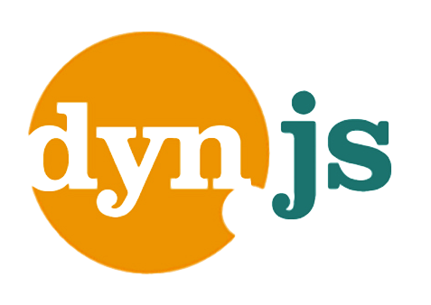
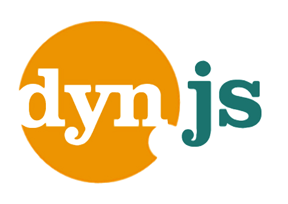

Entenda LISP em 15 minutos
23º encontro do GURU-SP

18/05/2012
Eu
Plínio Balduino - desenvolvedor e curioso
Balducas - @p_balduino
 



An elegant weapon
 http://xkcd.com/297/
http://xkcd.com/297/
Um pouco de história

Criada em 1958 por John McCarthy
Implementada pela primeira vez por Steve Russell, como LISP 1
Um pouco de história
Nem o próprio John McCarthy acreditou que era possível
Definição
LISP significa LISt Processing
-
A estrutura básica do LISP são listas ligadas, limitadas por parênteses (S-Expression)
-
O código é composto de, basicamente, uma lista de listas
-
Agora você entende o porquê daquele monte de parenteses
(operador valor valor valor ... valor)
(operador valor
(operador valor valor ... valor))
Definição
Atualmente LISP se refere a toda uma família de linguagens:
- AutoLISP
- Arc
- EmacsLISP
- Lucio
- Common Lisp
- Scheme
- Clojure
- Racket
- Chicken
E daí? A platéia já está bocejando.
Linguagens "comuns" usam notação infixa

Essa tal notação prefixa
# Ruby
1 + 2 + 3 + 4 + 5 + 6
1 + (2 * 3) + (4 * 5)
[1, 2, 3, 4, 5, 6].reduce(:+)
; LISP
(+ 1 2 3 4 5 6)
(+ 1 (* 2 3) (* 4 5))
; mais legível
(+ 1
(* 2 3)
(* 4 5))
Ainda estão bocejando
LISP trabalha diretamente na árvore sintática (notação prefixa)
Não existe o conceito de precedência de operadores
Código e dados recebem o mesmo tratamento
; Clojure
(defn soma [x y]
(+ x y))
(defn media [x y]
(/ (+ x y) 2))
(defn calcular [operador valor1 valor2]
(operador valor1 valor2))
(calcular soma 3 5) ; resultado: 8
(calcular media 3 5) ; resultado: 4
// JavaScript
function soma(x, y) {
return x + y;
}
function media(x, y) {
return (x + y) / 2;
}
function calcular(operador, valor1, valor2){
return operador(valor1, valor2);
}
calcular(soma, 3, 5) // resultado: 8
calcular(media, 3, 5) // resultado: 4
Macros
; Clojure
(defn unless [condition falsy truey]
(if condition
falsy
truey))
(unless authorized
(show-alert "Acesso negado")
(drop-database))
Não rolou. O que aconteceu?
Macros
; Clojure
(defmacro unless [condition truey falsy]
`(if ~condition
~falsy
~truey))
(unless authorized
(show-alert "Acesso negado")
(drop-database))
(macroexpand
'(unless false "Eh true" "Eh false"))
; (if false "Eh false" "Eh true")
Código é passado como parâmetro e avaliado condicionalmente
Macros
Seu código é avaliado (compilado) em tempo de execução
Na prática, você interfere no compilador em tempo de execução
Let Over Lambda trata apenas disso. É um livrinho com menos de 400 páginas
Macros permitem que você crie sua própria DSL
https://github.com/pbalduino/north
(describe "North"
(context "using context"
(it "should test simple assertions"
(should (= 1 1) be-true)
(should (= 1 1) be-true)
(should (= 1 0) be-false)
(should (+ 1 1) be-equals 2)
(should (+ 1 1) be-not-equals 1))))
E no final você vai aprender a
Dividir seu código em blocos pequenos e reutilizáveis
Reduzir as partes móveis e evitar estados globais
Entender melhor como funciona um compilador/interpretador
E de repente vai ter vontade de criar sua própria linguagem
←
→
/